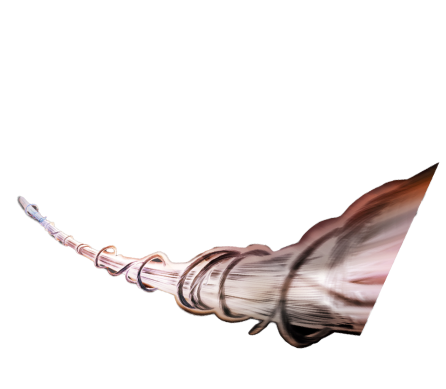
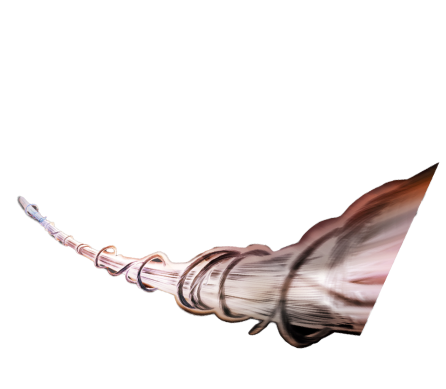

Conoce a spidey y a sus sorprendentes amigos
Spidey, nuestro lanzador de telarañas favorito se une a Ghost-
Spider (Gwen Stacey) y Miles Morales para formar el equipo de
Spidey, con la ayuda del cómico pero leal robot de Spidey, TRACE-
E. Si Spidey se encuentra en una situación difícil donde necesita
aún más poder de superhéroe, tengan la seguridad de que un
amigo de los Vengadores correrá para ayudar.


Peter Parker, un joven huérfano
neoyorquino que adquiere
superpoderes después de ser mordido
por una araña radiactiva, y cuya
ideología como héroe se ve reflejada
primordialmente en la expresión ”un
gran poder conlleva una gran
responsabilidad”.

Tras la muerte de Peter Parker, es
quien toma la identidad de
Spider-Man.
La elección del presidente Barack
Obama en enero de 2009, fue una
fuente de inspiración para el cambio
de etnicidad de Spider-Man.

El personaje es una variante de El
Hombre Araña, una versión de
universo alternativo de Gwen Stacy.
Ella reside en la "Tierra-65", donde, en
lugar de Peter Benjamin Parker, Gwen
Stacy fue mordida por la Araña
Radiactiva


Los vengadores acompañando tu aventura